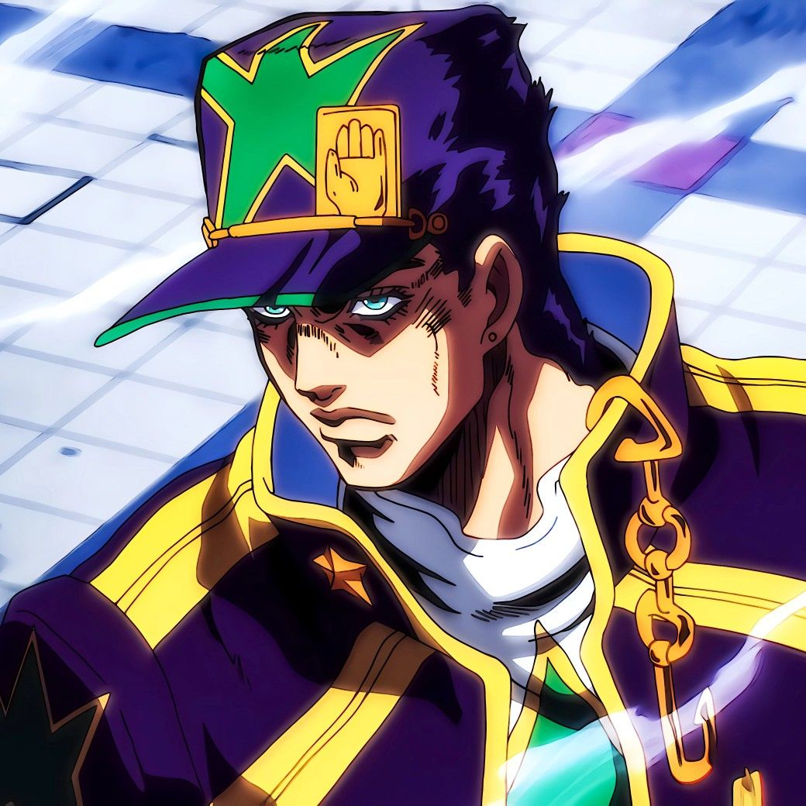
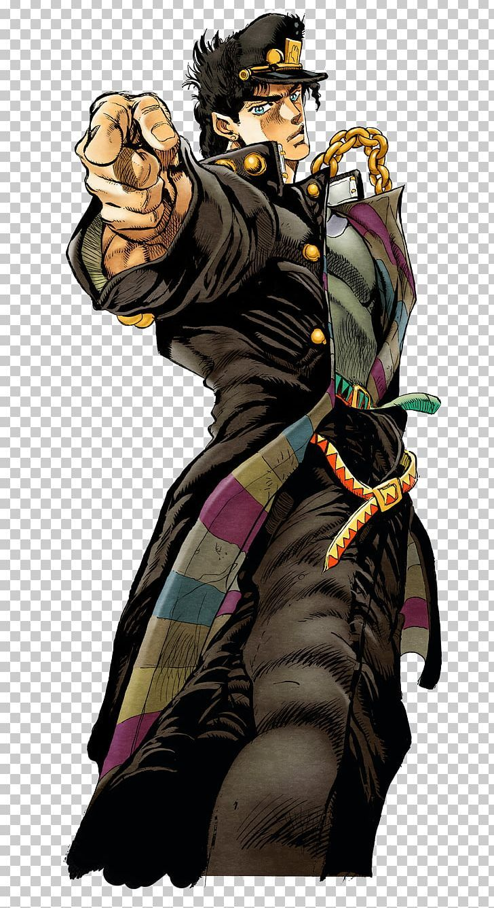

Some random information about your favorite JOJOs

Jotaro's creator, Hirohiko Araki,
based Jotaro's appearance and mannerisms on American actor Clint Eastwood

Jotaro's favorite film is "Never Cry Wolf"

Jotaro, the last "real" JoJo through naming conventions

Jotaro's name is a combination of Jojo and taro. the tarot cards from part 3
"YARE YARE DAZE"
-Jotaro Kujo